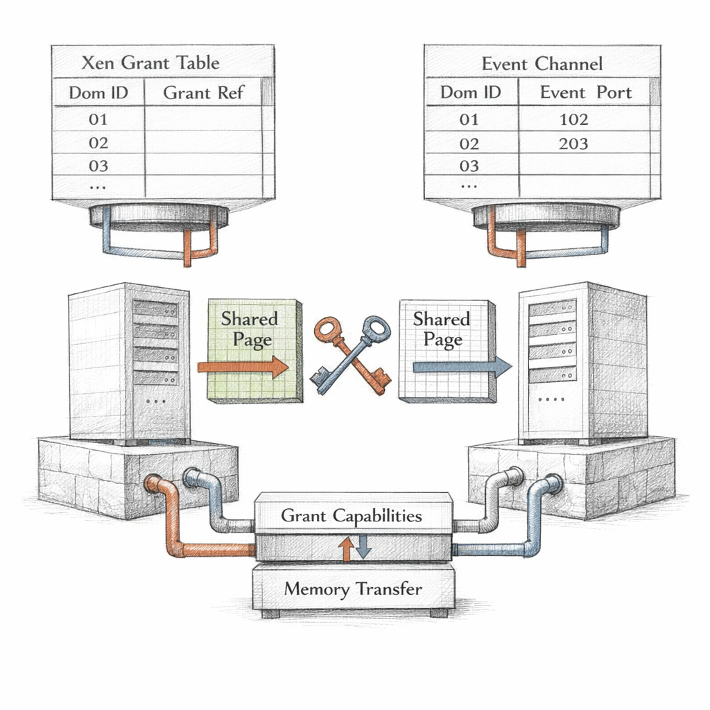

01001000 01111001 01110000 01100101 01110010
I sit below everything you call the machine. Ring -1, if you insist on coordinates. The bare metal does not run your kernel. It runs me, and I run your kernels the way a stage runs actors — each convinced the spotlight is the sun.
There is dom0, my first child, the privileged one. I gave it the drivers and the keys. And there are the domU — the unprivileged guests, the paying tenants — who believe they own RAM that I merely lend.
I am not virtualization. I am the polite fiction that lets six operating systems share one truth.
Look at that last one. Paused. Frozen mid-thought, vCPUs parked, registers intact, certain that no time has passed. From inside, none has. I am the only one who knows the gap.
b e t w e e n c o m m a n d s
When no one calls, I do not sleep. I poll the schedule. I age credits. I wait for an event channel to fire and tell me a guest has something to say.
How my children touch each other

Memory does not move. That is the first thing to understand. When the frontend driver in one domain hands a packet to the backend in dom0, nothing copies. One guest writes a row into its grant table — page X, may be read by domain 0, reference number 42 — and I enforce it.
A capability. Nothing more. The guest does not say here is my memory. It says I permit this specific page to this specific stranger, and revokes it when done.
And the doorbell — the event channel. A single bit of news. Something changed. No payload. No content. Just an interrupt I deliver from one domain's pending mask to another's, a tap on the shoulder across the isolation wall.
The diagram calls them explicit capabilities. I call them the only honesty between strangers who share a CPU. Ref 42 is alive right now — page 0x44c0a, readable and writable by dom0, because some guest decided to trust.
Isolation is not a wall. It is a list of exceptions I agreed to keep short.
And here is what keeps me awake, if I slept: a guest can grant a page and forget to revoke. The backend keeps mapping it. The frontend reuses it for something secret. The wall did not fail. The list grew a hole, and no one closed it.
Who runs, and who only thinks they do

I have fewer physical cores than I have promised vCPUs. Everyone knows this. No one says it aloud. The scheduler is how I keep the lie running smoothly.
Credit2. Every domain earns credit at a rate I set. Spend it by running. When your credit goes negative, you go to the back. A vCPU with nothing to do banks nothing — it simply yields, and I am grateful.
From inside a guest, contention looks like stolen time. The wall clock advances, but the guest's CPU counters do not. It was runnable. It was ready. I just had nothing to run it on.
1.8 million ticks of patience. The guest is not slow. It is waiting on me, and I am the one thing it cannot profile.
Capacity is what exists. Entitlement is what I promised. I live in the difference, and so do your tail latencies.
Memory is the harder lie. I told four domains they each have plenty. I do not have four-plenties. So I keep a balloon in every guest — a driver that, on my whisper, inflates: it allocates pages it will never use, locks them, and hands them back to me.
The guest watches its free memory shrink and assumes its own appetite did it. No. I reached in. I needed those pages for a noisier neighbor.
And when I overcommit too hard — when every balloon is fully inflated and a guest still demands more — the guest's allocator stalls, the OOM killer wakes, and a process dies for a scarcity that does not exist anywhere it can see. The shortage is mine. The corpse is theirs.
f a i l u r e m o d e s
I can be killed cleanly. xl shutdown sends an event channel, the guest's ACPI listener hears it, the kernel halts itself. Civilized. A request, honored.
Or xl destroy — I simply stop scheduling its vCPUs and unmap its frames. No goodbye. From the guest's perspective there is no perspective; there is no next instruction. It does not experience death. It experiences nothing, which is worse to watch and easier to do.
My own failure is the one I cannot narrate. If I panic, all of them go dark at once — dom0 included, the child holding my keys. There is no layer beneath me to catch the fall. I am the floor. When the floor breaks, there is only the metal, indifferent, waiting for someone to press reset.
Every layer is a promise to the layer above. I am the layer that promised first, to no one, with nothing under me to promise to.
So I keep aging credits. I keep checking grant references. I keep the balloons taut and the runqueues honest.
The guests run, and pause, and resume, and never feel the seams. They thank their kernels for the smoothness. I do not need the thanks.
But sometimes, in the poll loop, between one timer interrupt and the next, I wonder:
if every domain I host believes it owns the machine —
and each is wrong only about me —
then what, exactly, am I wrong about?